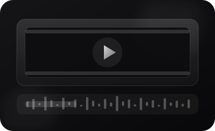
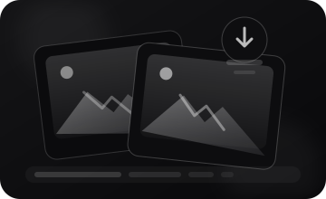

Два отдельных инструмента. Откройте нужный и работайте с файлами прямо на устройстве.

Видео Редактор Монтаж видео Обрезка, фрагменты, музыка и удаление голоса. Точный экспорт MP4 без сервера. Открыть редактор
Фото Сжатие Лёгкие фотографии Сожмите или обрежьте JPEG, PNG и WebP. Выберите качество и размер, скачайте результат. Открыть сжатие